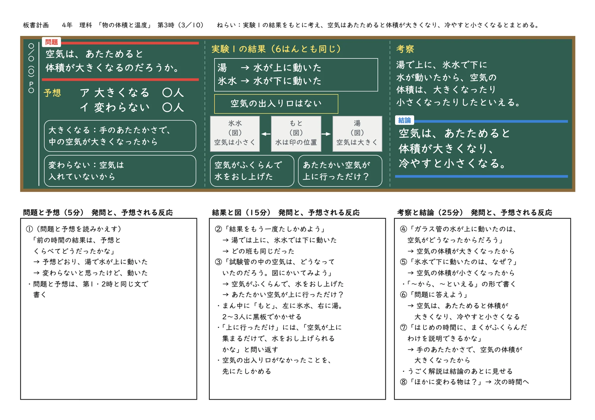
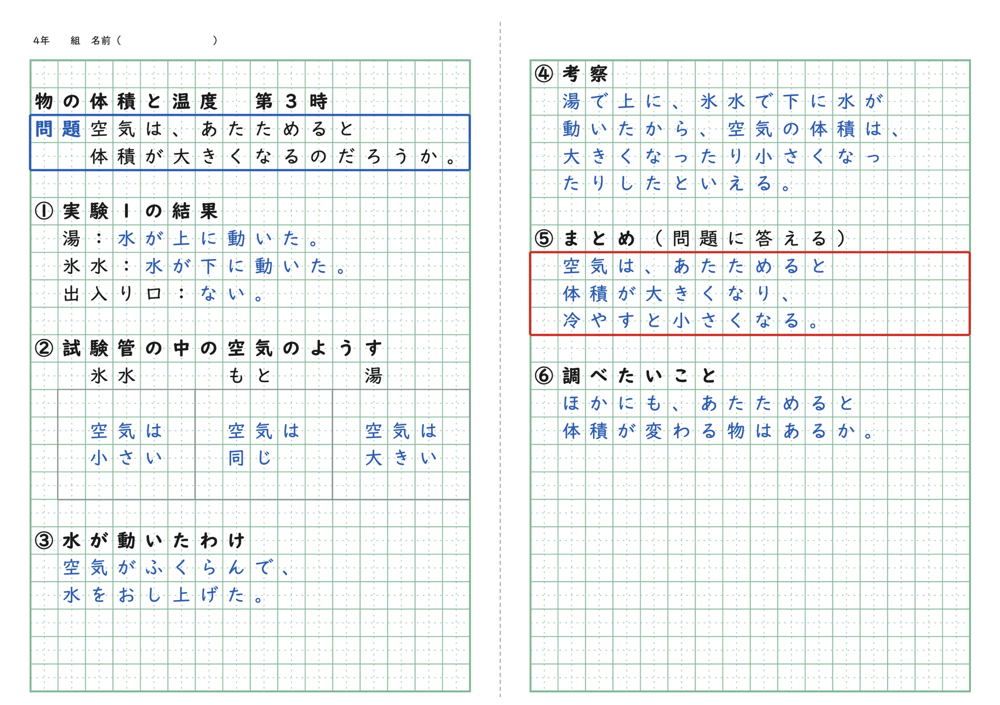
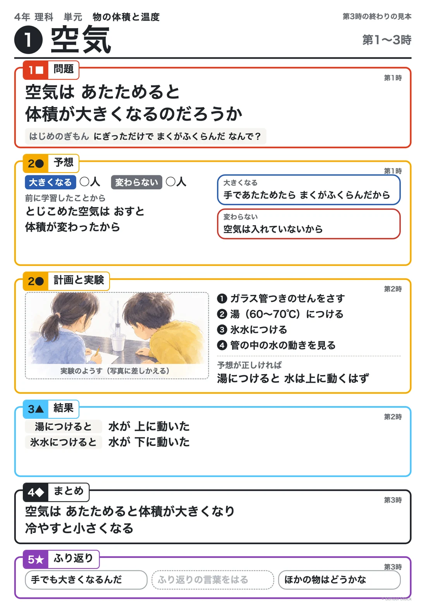

第3時 第１次 空気③
問題空気の体積と温度には、どんな関係があるのだろう
Board

Notebook

Aim
空気は、あたためると体積が大きくなるのかという問題について、実験１の結果を基に考える活動を通して、「空気は、あたためると体積が大きくなり、冷やすと小さくなる」という結論を導きだし、表現することができる。
Assessment
| 観点 | 評価規準 | 方法 |
|---|---|---|
| 思考・判断・表現 | 実験１の結果を基に、空気の体積と温度の関係について考察し、問題に正対した結論を表現している。 | ノート・発言 |
Flow
| 配時 | 学習活動 | 指導上の留意点 |
|---|---|---|
| 5分 | １ 問題と予想をふり返る。 | 〇 前の時間の板書の写真と、6つの班のホワイトボードを見せる。 |
| 15分 | ２ 結果を図に表し、水が動いたわけを考える。 | 〇 水を動かしたのは何かを考えさせるために、試験管の中の空気を図にかかせる。 〇 「空気がへった」という考えには、「ふたをしていたね。空気は外に出られたかな」と問う。 |
| 25分 | ３ 考察と結論を書き、次の問いをもつ。 | 〇 結果と考えを分けて書けるように、「〜から、〜といえる」の形を示す。 〇 問題に正対した結論を書かせ、うごく解説「あたためると？冷やすと？」で確かめる。 〇 「ほかに あたためると体積が変わる物は？」と問い、次の時間につなげる。 |
配時は45分の目安です。
Learning trail

More
空気の体積と温度には、どんな関係があるのだろう
空気は、あたためると体積が大きくなり、冷やすと体積が小さくなる。
うごく解説「あたためると？冷やすと？」。最後に結論の文が出るので、まとめのあとに見せる。何度でも同じ絵で見せられる。
ほかに あたためると体積が変わる物は？
根拠を基に「空気は、あたためると体積が大きくなり、冷やすと小さくなる」という妥当な結論を導きだし、表現している。